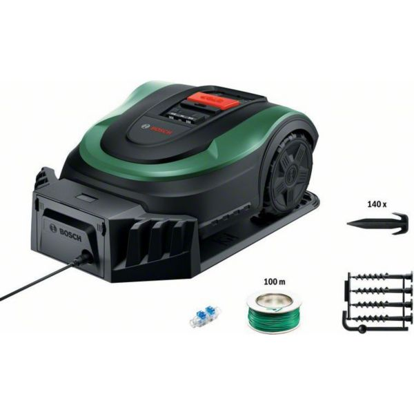
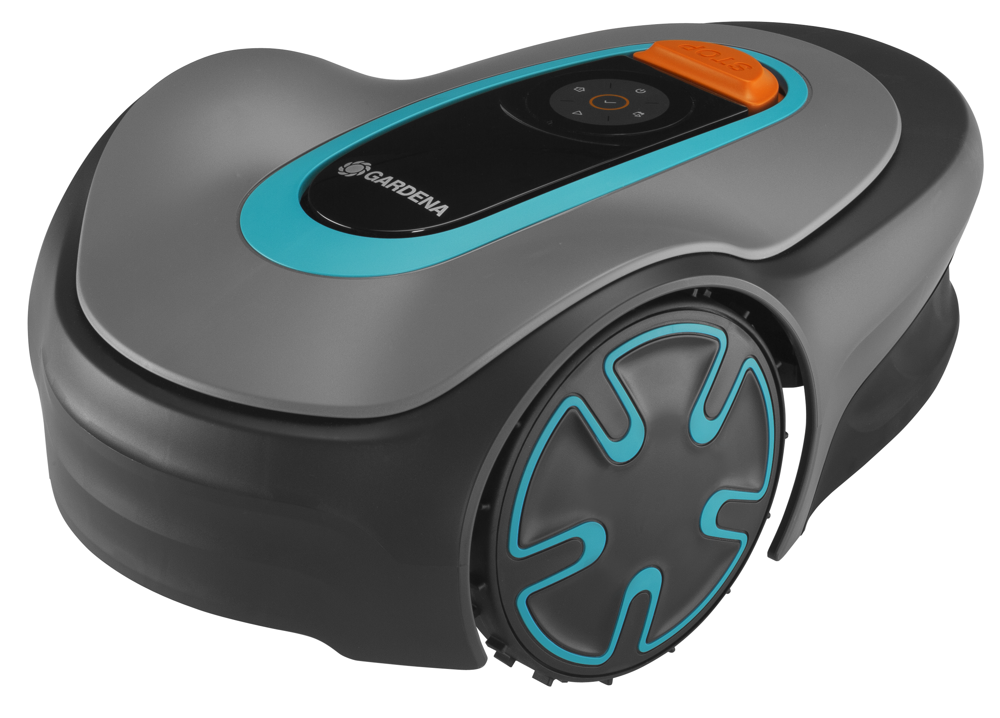
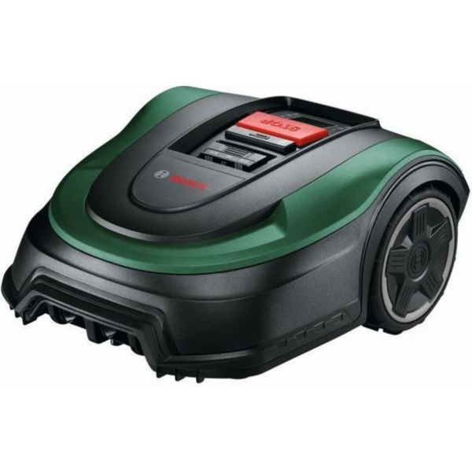
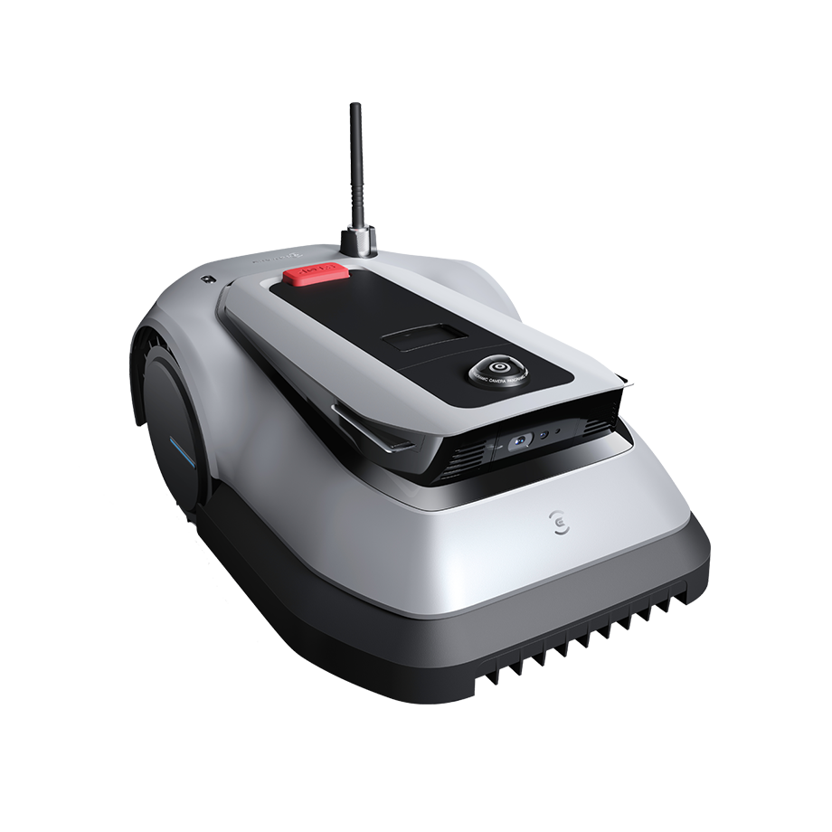
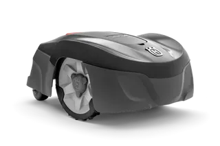

Ce qui change avec un petit jardin
Sur moins de 500 m², les priorités sont : manœuvrabilité (obstacles, passages étroits), bruit (voisinage) et prix — inutile d'investir 3 000 € pour 200 m². Les robots d'entrée et milieu de gamme sont amplement suffisants.
Quel budget pour un petit jardin ?
300–500 €
Jardins jusqu'à 250 m²
Bosch Indego XS 300, Gardena Sileno Minimo.
500–900 €
Jardins 250–500 m²
Ecovacs GOAT G1, Navimow i005E, Husqvarna 115H.
900–1500 €
Petit jardin complexe
Obstacles, pentes, zones multiples — Navimow i105E.
🔒
Analyse complète des 5 robots — Accès Complet
Débloque l'analyse complète, les avis acheteurs vérifiés et les défauts connus de chaque modèle.
- Avis acheteurs vérifiés (4+ par robot)
- Défauts connus & problèmes signalés
- Les 7 pièges à éviter avant d'acheter
- Comparateur côte-à-côte illimité
Paiement unique · Accès immédiat
Notre sélection pour petit jardin 2026

Bosch Indego XS 300
Jusqu'à 300 m²
Le plus compact du marché. Tonte en lignes parallèles, silencieux, idéal pour jardins urbains avec obstacles.
Voir la fiche →
Gardena Sileno Minimo 250
Le plus silencieux (57 dB), 250 m², installation simple, idéal voisinage.
Jusqu'à 250 m²
Bosch Indego M+ 700
700 m², navigation en lignes droites, 62 dB, câble inclus.
Jusqu'à 700 m²
Ecovacs GOAT G1
Sans câble, détecte +100 obstacles, idéal jardins encombrés de jouets ou meubles.
Sans fil
Husqvarna 115H
Navigation EPOS, 550 m², polyvalent et fiable, réseau SAV France.
PolyvalentQuestions fréquentes
Quel robot tondeuse pour petit jardin ?
Pour moins de 300 m² : Bosch Indego XS 300 ou Gardena Sileno Minimo. L'analyse complète et les avis vérifiés sont dans l'Accès Complet.
Est-ce que ça vaut le coup pour un petit jardin ?
Oui si votre jardin a des formes complexes ou si vous tondez régulièrement. Sur 200 m², un robot économise 20–30 min de tonte manuelle par semaine.
Un robot peut-il gérer des zones étroites ?
Les robots compacts (Bosch Indego XS, 30 cm de large) passent dans des couloirs de 60–70 cm. Mesurez vos passages les plus étroits avant d'acheter.
Quel est le robot le plus silencieux pour zone urbaine ?
Le Gardena Sileno Minimo 250 (57 dB) est le plus silencieux de sa gamme, suivi de Bosch Indego et Husqvarna 115H (58 dB).